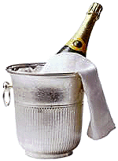

В настоящее время стандартной мерой, в которой выражается потребление спиртных напитков, является одна единица алкоголя, которая равна 10 мл по объему (8 г по весу) чистого спирта.
В настоящее время стандартной мерой, в которой выражается потребление спиртных напитков, является одна единица алкоголя, которая равна 10 мл по объему (8 г по весу) чистого спирта.
По последним данным, существуют следующие рекомендации по умеренному употреблению алкоголя: для мужчин 21 единица алкоголя в неделю (не более 4 единиц в день), а для женщин - не более 14 единиц в неделю (3 единицы в день).
Существует необходимость иметь возможность точной оценки единиц алкоголя, содержащихся в выпитых напитках, чтобы помочь хроническим алкоголикам снизить потребление спиртного до умеренных пределов. Работники здравоохранения обычно полагаются на общее правило, которое приравнивает одну единицу алкоголя к «половине пинты пива, стакану вина или стандартной мере спиртного». Это простое правило часто бывает ненадежным, т.к. применяется для пива средней крепости или для бокала вина объемом 125 мл, содержащего 8% алкоголя. Оно не применимо для крепкого и легкого пива, а также для многих вин с процентным объемом алкоголя 12-14% в бокалах на 175 мл и более, потребляемых в ресторанах, барах или дома. Также не учитываются коктейли с водкой или водка c соком. Единица алкоголя, содержащаяся в подобных напитке, может быть вычислена по формуле: объем (мл) x % алкоголя по объему / 1000 или даже проще: процент алкоголя в объеме любого напитка соответствует количеству единиц алкоголя в одном литре данного напитка. Например, пол-литра (500 мл) спиртного напитка при большей крепости (8% по объему) может содержать 4 единицы, а 1/8 литра (125 мл) стакана вина (12% крепости по объему) - 1,5 единицы.
Тем не менее, некоторые люди хотели бы знать крепость напитков, которые они пьют, для того, чтобы следовать приведенному совету по умеренному потреблению алкоголя. Именно поэтому им необходима достоверная информация о количестве единиц алкоголя, которое содержит напиток. В настоящее время производители спиртного делают маркировку единиц содержащегося алкоголя, но даже если такая информация приведена, она обычно указывается неточно.
Таким образом, для государственных структур существует необходимость ввести четкую маркировку единиц на всей алкогольной продукции.
Drug and Therapeutics Bulletin, 2001; 39 (12): 95